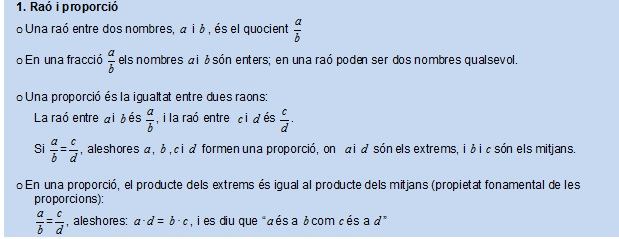
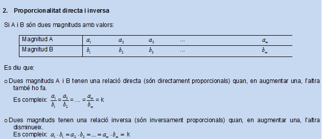

RECORDA
|
Recorda: 

Problemes de proporcionalitat directa i inversa. Regles de tres simples
o
Regla de tres simple directa:
-
Es representen les quantitats conegudes
i desconegudes en forma de taula, posant a la mateixa columna les quantitats
que tenen les mateixes unitats.
-
Càlcul: multiplicar en diagonal i
dividir en horitzontal.
o
Regla de tres simple inversa:
-
Es representen les quantitats conegudes
i desconegudes en forma de taula, posant a la mateixa columna les quantitats
que tenen les mateixes unitats.
-
Càlcul: multiplicar en horitzontal i
dividir en diagonal.
Exemple pràctic: càlculs d’escala
ENLLAÇ: Teorema de Thales (Les
Luthiers): http://www.youtube.com/watch?v=ujd6ylE4h88&feature=fvwrel
|